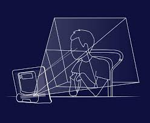
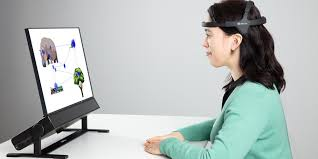

Inicio
En un mundo donde la tecnología avanza a pasos agigantados, con tecnologías en auge como la IA o el IoT. Creémos que estos avances deben enfocarse también en otros puntos como la inclusión. De esta forma, la tecnología podrá ser utilizada por todos, facilitandonos la vida. En esta página web hablaremos de algunos avances en el hardware que están transformando la vida de personas con discapacidades, permitiéndoles interactuar con la tecnología de manera efectiva y empoderadora.
Se pueden explorar multiples dispositivos desde las prótesis biónicas más avanzadas, que permiten devolver la autonomía a aquellos que han perdido alguna extremidad; hasta los asistentes de voz, que son utilizados para ayudar a personas con discapacidades visuales. Sin embargo, nos vamos a centrar en un dispositivo de eye tracking que busca reduccir los problemas de las personas con movilidad reducida.
The Eyegaze Edge
Es un sistema de seguimiento ocular permite a personas con movilidad reducida controlar un ordenador utilizando solo el movimiento de sus ojos. Este sistema utiliza algoritmos avanzados de seguimiento ocular para detectar con precisión dónde está mirando el usuario.
Es uno de los sistemas más avanzados disponibles. Permite a los usuarios generar texto, navegar por Internet, y controlar programas de computadora y dispositivos del hogar. La configuración es rápida y sencilla, y el sistema está diseñado para ser de bajo esfuerzo y altamente preciso, lo que lo hace ideal para uso prolongado.
Es un dispositivo compacto que suele incluir una pantalla de alta resolución similar a una tablet grande, montada en un soporte ajustable para que el usuario pueda verla y usarla cómodamente. Esta "tablet" posee la cámara que se encargará de detectar nuestro movimiento ocular situada en la parte baja de la pantella.
Entre los principales benefícios que puede aportar este dispositivo están su compativilidad con sistemas operativos como Windows y otras aplicaciones o su capacidad para permitir la participación en entornos digitales a personas con movilidad reducida.
Desarrollo del Eye Tracking
El eye tracking, o seguimiento ocular, ha evolucionado significativamente desde su creación. Esta tecnología comenzó a desarrollarse como lo conocemos hoy en la década de los 70, con el uso de sensores infrarrojos y cámaras para medir los movimientos oculares. En los años 2000, comenzaron a aparecer dispositivos más asequibles y portátiles, permitiendo su uso en aplicaciones comerciales y en investigación de mercados.
Hoy en día, el eye tracking es una tecnología avanzada y versátil. Utiliza cámaras de alta precisión y algoritmos sofisticados para rastrear los movimientos oculares con gran exactitud. Se utiliza en una amplia variedad de aplicaciones, desde la investigación en psicología y marketing hasta la mejora de la accesibilidad tecnológica para personas con discapacidades.
En concreto el Eyegaze Edge, es un dispositivo avanzado, que conecta el eyes tracking con un software intuitivo y enfocado en facilitar la navegación en la red entre otras de sus funcionalidades.
 